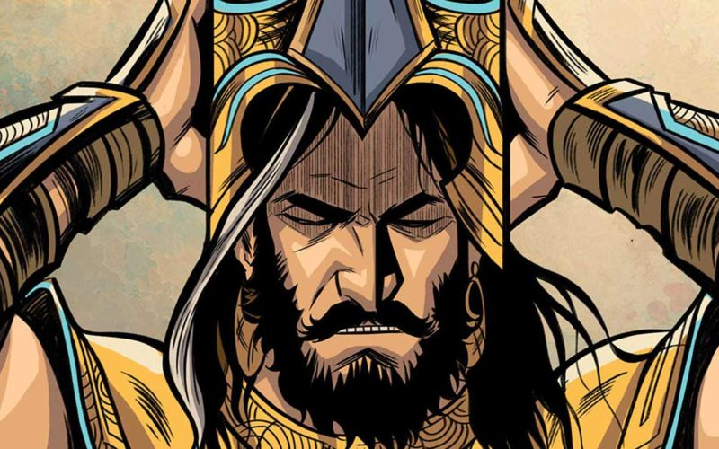

Cultural Education Project - 2nd Semester AIE
Yuyutsu
 While there was a handful of Kauravas who were aware of the evil brewing on their side; in the name of dharma, friendships, and favours,
they didn’t act on their inner calling. Yuyutsu, however, was a little different. Since Mahabharata was called the righteous war, both sides (Pandavas and Kauravas) were given absolute freedom to choose any side they wished. Yuyutsu
could see Kauravas going down. He didn’t turn a blind eye towards the fraudulent and evil practices of Duryodhana. He, very smartly, did what had to be done. He provided them crucial information centering around Duryodhana’s cunning
plotting and schemes, thereby helping Pandavas substantially. One significant way he helped them definitely has to be of saving Bhima’s life. One of the many Duryodhana’s evil plans included poisoning of water to kill Bhima; a
plan that didn’t work out, thanks to Yuyutsu alarming the Pandavas about it. He was one of the Atirathis among the Kauravas. But, he chose to fight for the right with the right, and hence, took part in the Kurukshetra war from
the Pandavas’ side. Atirathi is a warrior capable of contending with 12 Rathi class warriors or 60,000 warriors simultaneously, circumspect in his mastery of all forms of weapons and combat skills. Only twelve people managed to
survive the Kurukshetra war and Yuyutsu was one among them. Years after the war and prior to the Yadava crisis, Yuyutsu found the city falling apart. The citizens would pick up fights with each other and live in depravity. When
Yuyutsu yearned to know the cause, they would hurl abuses at him and call him a traitor and a kingslayer.
But, when was the righteous path easy anyway? At the start of Kali Yuga, when the Pandavas chose to retire
and Krishna departed– Yudhishthira, the eldest Pandava and a former king of Indraprastha and later of Hastinapur, handed over the charge of supervising the kingdom of Hastinapur to Yuyutsu. Parikshit, the grandson of Arjuna, on
the other hand, was made the king. Both Yuyutsu and Vikarna (another Kaurava) knew and were critical of Duryodhana’s evil schemings. However, what
set them apart was Vikarna’s decision to stay loyal to his brother. Whereas, Yuyutsu’s perception of dharma was to stay with the right, regardless of the adversities. Many also applaud Vikarna as he remained in the camp knowing
the imminent defeat and death. He never abandoned his brother. The beauty of Mahabharata lies in the nuances of morality. Bhima reminds him of the dice game, where Vikarna had criticized his brother. Vikarna replied. Although the
circumstance of his death is not mentioned in the original epic Mahabharata, there are some clues in other legends. After the war, Gandhari could not restrain herself and blamed Pandavas for killing innumerable people for the sake
of the kingdom. Then she said that she had not seen her husband and her children, and now she wanted to see the Pandavas which would be some consolation for her. She wanted them to take the cover off her eyes. A suspicious Krishna
quietly asked Sahadeva what her intentions were, and Sahadeva said that she wanted to destroy the Pandavas with her fiery glance. “There must be no residue of enemies”, said Krishna to Sahadeva, and he went to Yuyutsu and asked
him to take off the cover from his stepmother’s eyes. As he did so, Gandhari’s fiery look reduced him to ashes instantly. First Vidura and then Krishna admonished her for killing her only surviving son who Yudhisthira had protected
and told her that if Yudhisthira perished, dharma would perish. He asked her to cover her eyes again. A chastened Gandhari obeyed without a word.
However, what
set them apart was Vikarna’s decision to stay loyal to his brother. Whereas, Yuyutsu’s perception of dharma was to stay with the right, regardless of the adversities. Many also applaud Vikarna as he remained in the camp knowing
the imminent defeat and death. He never abandoned his brother. The beauty of Mahabharata lies in the nuances of morality. Bhima reminds him of the dice game, where Vikarna had criticized his brother. Vikarna replied. Although the
circumstance of his death is not mentioned in the original epic Mahabharata, there are some clues in other legends. After the war, Gandhari could not restrain herself and blamed Pandavas for killing innumerable people for the sake
of the kingdom. Then she said that she had not seen her husband and her children, and now she wanted to see the Pandavas which would be some consolation for her. She wanted them to take the cover off her eyes. A suspicious Krishna
quietly asked Sahadeva what her intentions were, and Sahadeva said that she wanted to destroy the Pandavas with her fiery glance. “There must be no residue of enemies”, said Krishna to Sahadeva, and he went to Yuyutsu and asked
him to take off the cover from his stepmother’s eyes. As he did so, Gandhari’s fiery look reduced him to ashes instantly. First Vidura and then Krishna admonished her for killing her only surviving son who Yudhisthira had protected
and told her that if Yudhisthira perished, dharma would perish. He asked her to cover her eyes again. A chastened Gandhari obeyed without a word.